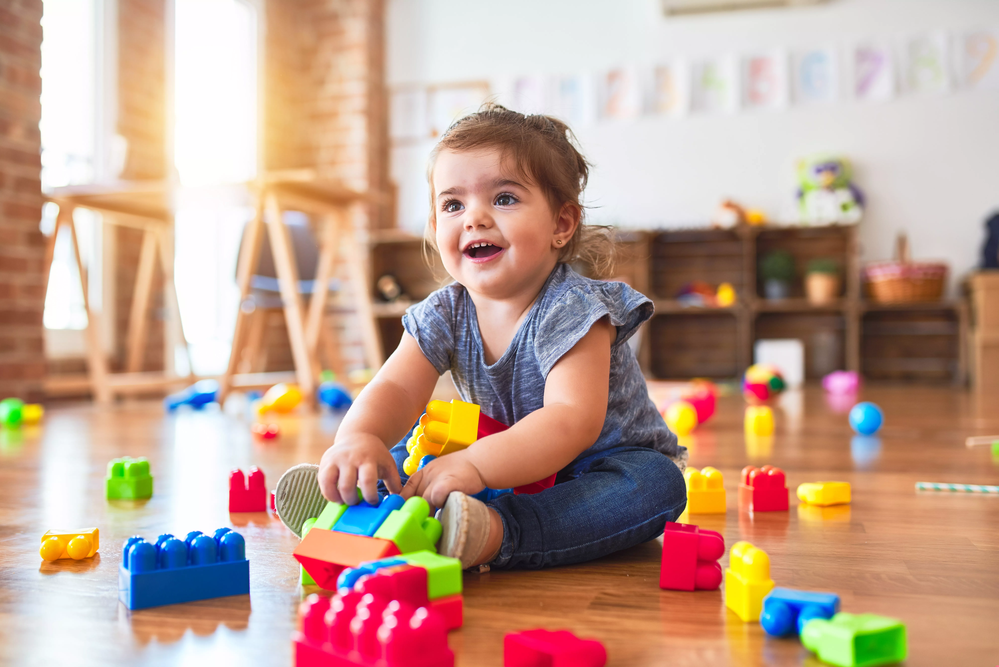
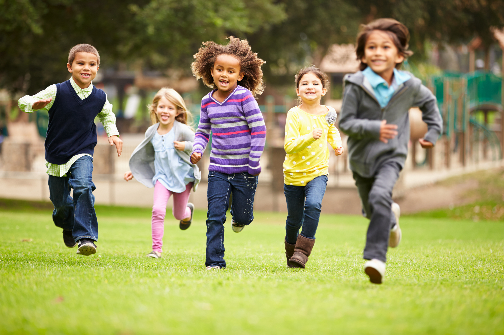

Este projeto busca auxiliar pais, responsáveis e cuidadores a compreender como as experiências, interações e brincadeiras contribuem para o desenvolvimento infantil.

Observando a sociedade atual, percebe-se algumas mudanças que podem influenciar as experiências e o desenvolvimento infantil.
O aumento do uso de dispositivos eletrônicos durante a infância tem se tornado cada vez mais frequente.
Muitas crianças vêm reduzindo interações com pessoas e objetos do ambiente em que vivem.
O brincar, a linguagem e as relações sociais possuem papel importante na construção do conhecimento.
Nesse sentido, experiências de brincar, explorar, conversar e interagir com o meio podem tornar-se menos frequentes, apesar de sua importância para o desenvolvimento infantil.
O projeto tem como finalidade auxiliar pais, responsáveis e cuidadores a integrar ações práticas e acessíveis ao desenvolvimento infantil, contribuindo para a compreensão de como a criança aprende, se relaciona com o mundo e se desenvolve ao longo das diferentes etapas da infância.
Além disso, busca oferecer orientações que possam ser incorporadas ao cotidiano familiar, mesmo diante das exigências da rotina de trabalho e das responsabilidades domésticas.

Uma das principais formas de expressão, aprendizagem e construção de sentido na infância.
A brincadeira pode ser compreendida como uma importante forma de linguagem infantil. Por meio dela, a criança expressa pensamentos, emoções e experiências que muitas vezes ainda não consegue comunicar verbalmente.
Isso ocorre porque suas capacidades de linguagem e compreensão de si mesma ainda estão em desenvolvimento. Muitas vezes, a criança não apenas encontra dificuldades para comunicar aquilo que sente, mas também para compreender suas próprias experiências. Nesse contexto, o brincar torna-se um espaço de expressão, elaboração e descoberta.
Ao brincar, a criança representa situações, experimenta papéis e atribui significados às suas vivências, construindo gradualmente sua forma de compreender o mundo.
Ele permite que a criança comunique sentimentos, ideias e experiências antes mesmo de conseguir expressá-los completamente pela fala.
O brincar atua em diferentes dimensões do desenvolvimento infantil de forma integrada.
Estimula raciocínio lógico, atenção, memória e resolução de problemas por meio da exploração e experimentação.
Permite a expressão de sentimentos, ajudando na autorregulação emocional e na construção da autoestima.
Desenvolve cooperação, empatia, comunicação e compreensão das regras de convivência em grupo.
Estimula imaginação, invenção de histórias e criação de soluções novas para diferentes situações.
Cada etapa possui características próprias e necessidades diferentes
Pequenas ações no cotidiano podem gerar grandes impactos no desenvolvimento da criança
Fazer perguntas abertas, ouvir com atenção e contar histórias ajuda no desenvolvimento da linguagem, criatividade, autoestima e fortalecimento do vínculo afetivo.
Faz de conta, desenho, construção e jogos cooperativos estimulam criatividade, coordenação motora, autonomia e resolução de problemas.
Atividades cotidianas como cozinhar, passear e participar da rotina fortalecem autonomia, vínculo afetivo e compreensão do mundo.
Síntese das reflexões sobre o desenvolvimento infantil e o papel do brincar
O desenvolvimento infantil ocorre por meio das experiências, interações e estímulos que a criança vivencia ao longo da infância.
O brincar, a linguagem e a convivência com outras pessoas desempenham um papel fundamental nesse processo, contribuindo para a construção do conhecimento, da autonomia e das relações sociais.
Mesmo pequenas ações realizadas no cotidiano podem favorecer significativamente o desenvolvimento da criança. Dessa forma, este projeto busca auxiliar pais, responsáveis e cuidadores a compreender melhor essas necessidades e a participar de forma mais ativa desse processo.
Informações institucionais e contexto acadêmico da proposta
Este projeto foi desenvolvido como parte de uma atividade de curricularização da graduação em Psicologia, com o objetivo de aproximar conhecimentos teóricos sobre o desenvolvimento infantil de aplicações práticas.
A proposta busca contribuir para a compreensão do papel do brincar no desenvolvimento cognitivo, social e emocional, oferecendo informações acessíveis para pais, responsáveis e cuidadores.
Autores:
• Júlia Piffer
• Stefany Alberton Morais
Curso: Psicologia